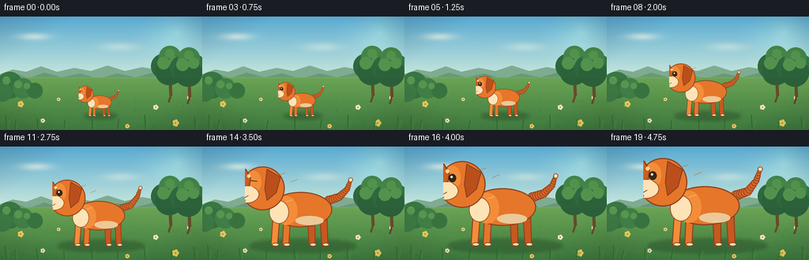
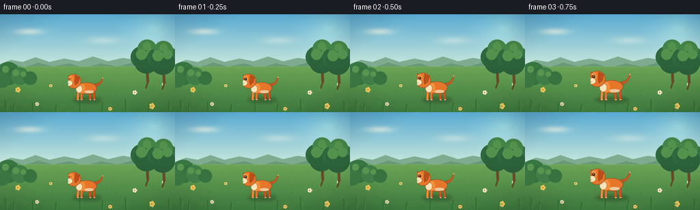
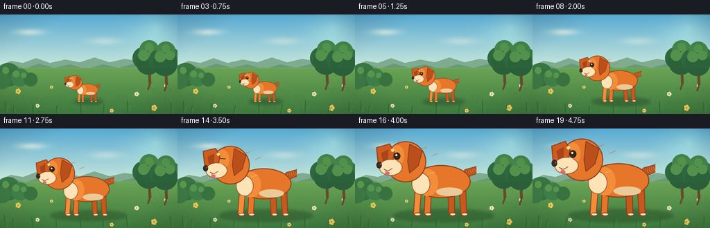
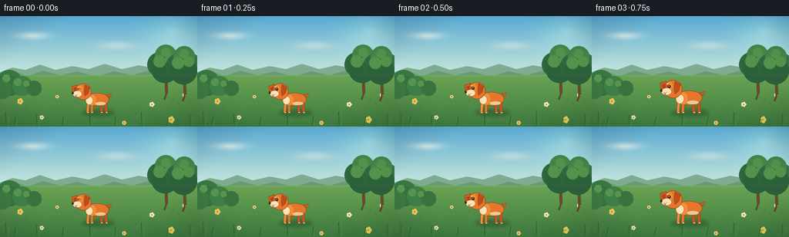
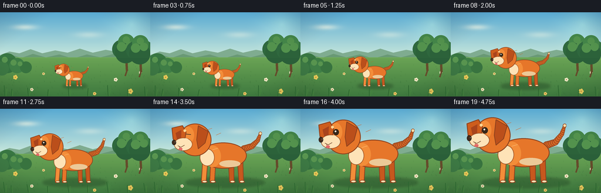
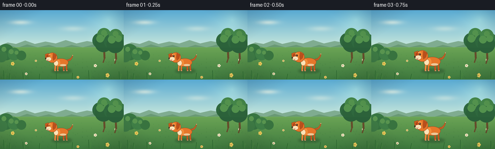

CODING AGENTS AS PIXEL WORLD MODELS
traex/DeepSeek-V4.1-Flash · instance_preservation_0047
点击播放 · 原生 RGB 像素
逐轮保存的候选
回放视频、检查图与代码变化。
每份候选均可单独播放。实际图片检查记录在下方工具轨迹中。
候选 01播放与检查图
点击播放 · 原生 RGB 像素


展开代码变化
--- 上一保存版本
+++ 本次保存版本
@@ -0,0 +1,345 @@
+from __future__ import annotations
+
+import math
+from pathlib import Path
+
+import numpy as np
+from PIL import Image, ImageDraw, ImageFilter
+
+import artifact_io
+
+
+WIDTH = 256
+HEIGHT = 144
+FRAMES = 20
+FPS = 4.0
+SS = 4
+
+
+def lerp(a, b, t):
+ return a + (b - a) * t
+
+
+def mix(c0, c1, t):
+ return tuple(round(lerp(a, b, t)) for a, b in zip(c0, c1))
+
+
+def smoothstep(t):
+ t = min(1.0, max(0.0, t))
+ return t * t * (3.0 - 2.0 * t)
+
+
+def ellipse(draw, box, fill, outline=None, width=1):
+ draw.ellipse(tuple(round(v * SS) for v in box), fill=fill, outline=outline, width=max(1, round(width * SS)))
+
+
+def polygon(draw, points, fill, outline=None, width=1):
+ pts = [(round(x * SS), round(y * SS)) for x, y in points]
+ draw.polygon(pts, fill=fill)
+ if outline is not None:
+ draw.line(pts + [pts[0]], fill=outline, width=max(1, round(width * SS)), joint="curve")
+
+
+def line(draw, points, fill, width=1, joint="curve"):
+ pts = [(round(x * SS), round(y * SS)) for x, y in points]
+ draw.line(pts, fill=fill, width=max(1, round(width * SS)), joint=joint)
+
+
+def make_background(frame_index):
+ """A quiet, sunlit meadow with stable landmarks for judging scale."""
+ h, w = HEIGHT, WIDTH
+ yy, xx = np.mgrid[0:h, 0:w].astype(np.float32)
+
+ sky_t = np.clip(yy / 84.0, 0, 1)
+ top = np.array([87, 167, 208], dtype=np.float32)
+ bottom = np.array([210, 236, 219], dtype=np.float32)
+ sky = top[None, None, :] * (1 - sky_t[..., None]) + bottom[None, None, :] * sky_t[..., None]
+
+ glow_x, glow_y = 224, 20
+ dist = np.sqrt((xx - glow_x) ** 2 + (yy - glow_y) ** 2)
+ glow = np.clip(1.0 - dist / 66.0, 0, 1) ** 2
+ sky = sky + glow[..., None] * np.array([36, 31, 15], dtype=np.float32)
+
+ # Soft, slow clouds preserve the wide framing.
+ drift = frame_index * 0.22
+ for cx, cy, sx, sy, alpha in [
+ (42 + drift, 25, 26, 6.0, 0.55),
+ (151 + drift * 0.7, 38, 31, 7.0, 0.35),
+ (205 + drift * 0.5, 58, 18, 4.5, 0.22),
+ ]:
+ cloud = np.exp(-(((xx - cx) / sx) ** 2 + ((yy - cy) / sy) ** 2) * 1.7)
+ sky = sky * (1 - alpha * cloud[..., None]) + np.array([250, 249, 230]) * alpha * cloud[..., None]
+
+ img = Image.fromarray(np.clip(sky, 0, 255).astype(np.uint8), "RGB").resize(
+ (w * SS, h * SS), Image.Resampling.BICUBIC
+ )
+ draw = ImageDraw.Draw(img, "RGBA")
+
+ # Distant blue-green hills.
+ far = [(0, 73), (16, 67), (33, 70), (52, 63), (72, 70), (94, 65), (115, 69),
+ (136, 62), (158, 69), (180, 64), (202, 68), (225, 61), (243, 67), (256, 64),
+ (256, 91), (0, 91)]
+ polygon(draw, far, (125, 169, 143))
+ near = [(0, 77), (18, 72), (36, 78), (56, 71), (78, 77), (101, 72), (124, 79),
+ (148, 72), (171, 77), (194, 71), (218, 78), (239, 72), (256, 76),
+ (256, 95), (0, 95)]
+ polygon(draw, near, (103, 151, 116))
+
+ # Grass gradient, with the horizon kept high enough for a generous dog silhouette.
+ grass = np.array([111, 170, 88], dtype=np.float32)
+ grass2 = np.array([62, 123, 64], dtype=np.float32)
+ grass_t = np.clip((yy - 77) / 67.0, 0, 1)
+ field = grass[None, None, :] * (1 - grass_t[..., None]) + grass2[None, None, :] * grass_t[..., None]
+ field_img = Image.fromarray(np.clip(field, 0, 255).astype(np.uint8), "RGB").resize(
+ (w * SS, h * SS), Image.Resampling.BICUBIC
+ )
+ mask = Image.new("L", (w * SS, h * SS), 0)
+ md = ImageDraw.Draw(mask)
+ md.rectangle((0, round(77 * SS), w * SS, h * SS), fill=255)
+ img.paste(field_img, (0, 0), mask)
+
+ # Meadow highlights and tiny flowers create depth without competing with the dog.
+ rng = np.random.default_rng(47)
+ for _ in range(150):
+ x = float(rng.uniform(0, w))
+ y = float(rng.uniform(82, 143))
+ depth = (y - 80) / 64
+ length = lerp(1.0, 3.6, depth)
+ shade = int(lerp(48, 92, rng.random()))
+ line(draw, [(x, y), (x - length * 0.35, y - length)], (55, 112, 56, shade), lerp(0.5, 1.2, depth))
+
+ for x, y, color, size in [
+ (26, 111, (246, 212, 92), 2.4), (54, 132, (247, 238, 198), 1.7),
+ (74, 105, (249, 225, 140), 1.4), (197, 115, (250, 240, 207), 2.0),
+ (222, 135, (247, 211, 96), 2.7), (239, 103, (248, 238, 200), 1.5),
+ (161, 139, (244, 204, 101), 1.7), (105, 93, (249, 238, 198), 1.3),
+ ]:
+ for angle in range(0, 360, 72):
+ dx = math.cos(math.radians(angle)) * size
+ dy = math.sin(math.radians(angle)) * size
+ ellipse(draw, (x + dx - size * 0.7, y + dy - size * 0.7,
+ x + dx + size * 0.7, y + dy + size * 0.7), color)
+ ellipse(draw, (x - 0.8, y - 0.8, x + 0.8, y + 0.8), (173, 115, 55))
+
+ # A cluster of mature trees on the right establishes the horizon scale.
+ for tx, ty, crown in [(215, 71, 22), (239, 73, 18)]:
+ line(draw, [(tx, ty + 8), (tx + 1, ty + 29)], (105, 75, 43, 255), 4.0)
+ line(draw, [(tx + 1, ty + 29), (tx - 2, ty + 38)], (105, 75, 43, 255), 2.5)
+ for ox, oy, r, col in [(-8, -8, 16, (45, 102, 62)), (7, -10, 15, (51, 114, 67)),
+ (0, -20, 14, (65, 130, 72)), (-1, -2, 18, (42, 96, 58))]:
+ ellipse(draw, (tx + ox - r, ty + oy - r, tx + ox + r, ty + oy + r), col)
+ for ox, oy, r in [(-8, -12, 8), (6, -14, 7), (0, -24, 6)]:
+ ellipse(draw, (tx + ox - r, ty + oy - r, tx + ox + r, ty + oy + r), (81, 144, 77))
+
+ # Left-side shrubs add a second stable landmark.
+ for bx, by, r, col in [(12, 87, 17, (54, 116, 66)), (29, 91, 13, (64, 129, 72)),
+ (44, 94, 10, (56, 117, 65)), (3, 96, 12, (62, 124, 70))]:
+ ellipse(draw, (bx - r, by - r, bx + r, by + r), col)
+ for bx, by, r in [(8, 81, 5), (23, 86, 5), (34, 88, 4)]:
+ ellipse(draw, (bx - r, by - r, bx + r, by + r), (91, 153, 82))
+
+ # Grounding band and gentle vignette.
+ shade = Image.new("RGBA", img.size, (0, 0, 0, 0))
+ sd = ImageDraw.Draw(shade)
+ sd.rectangle((0, round(78 * SS), w * SS, h * SS), fill=(22, 54, 39, 18))
+ img = Image.alpha_composite(img.convert("RGBA"), shade)
+ vignette = np.zeros((h, w, 4), dtype=np.uint8)
+ vx = np.abs(xx - (w - 1) / 2) / (w / 2)
+ vy = np.abs(yy - (h - 1) / 2) / (h / 2)
+ edge = np.clip((vx * 0.55 + vy * 0.45 - 0.58) / 0.42, 0, 1)
+ vignette[..., 3] = (edge * 30).astype(np.uint8)
+ vimg = Image.fromarray(vignette, "RGBA").resize((w * SS, h * SS), Image.Resampling.BILINEAR)
+ img = Image.alpha_composite(img, vimg)
+ return img
+
+
+def dog_polygon(draw, points, fill, outline, width=1.35):
+ polygon(draw, points, fill, outline, width)
+
+
+def draw_tail(draw, base_x, base_y, phase, s):
+ wag = math.sin(phase) * 0.11
+ # Thick tapered tail built from overlapping circles; its silhouette remains legible at small scale.
+ pts = [
+ (base_x - 2, base_y),
+ (base_x + 13, base_y - 5),
+ (base_x + 24, base_y - 17 - wag * 20),
+ (base_x + 29, base_y - 31 - wag * 28),
+ ]
+ widths = [13, 11, 8, 5]
+ for (x0, y0), (x1, y1), w0, w1 in zip(pts[:-1], pts[1:], widths[:-1], widths[1:]):
+ steps = 5
+ for j in range(steps + 1):
+ t = j / steps
+ x = lerp(x0, x1, t)
+ y = lerp(y0, y1, t)
+ r = lerp(w0, w1, t) / 2
+ ellipse(draw, (x - r, y - r, x + r, y + r), (213, 101, 37), (139, 66, 31), 1.0)
+ r = 3.3
+ ellipse(draw, (base_x + 29 - r, base_y - 31 - wag * 28 - r,
+ base_x + 29 + r, base_y - 31 - wag * 28 + r),
+ (249, 219, 168), (139, 66, 31), 1.0)
+
+
+def draw_leg(draw, x_top, x_foot, y_top, y_foot, color, front=False):
+ top_w = 10.0 if front else 11.0
+ foot_w = 8.0 if front else 7.5
+ poly = [
+ (x_top - top_w / 2, y_top),
+ (x_top + top_w / 2, y_top),
+ (x_foot + foot_w / 2, y_foot - 5),
+ (x_foot + foot_w / 2 + 2, y_foot - 1),
+ (x_foot - foot_w / 2, y_foot),
+ (x_foot - foot_w / 2 - 1, y_foot - 4),
+ ]
+ dog_polygon(draw, poly, color, (137, 63, 29), 1.25)
+ ellipse(draw, (x_foot - foot_w / 2, y_foot - 5.0, x_foot + foot_w / 2 + 2.0, y_foot),
+ (249, 222, 177), (137, 63, 29), 1.0)
+
+
+def draw_dog(canvas, scale, phase, center_x=127.5, ground_y=126.5):
+ """Draw one coherent orange dog in local coordinates, then scale around its feet."""
+ local_w, local_h = 190, 124
+ layer = Image.new("RGBA", (local_w * SS, local_h * SS), (0, 0, 0, 0))
+ draw = ImageDraw.Draw(layer, "RGBA")
+
+ ox, oy = 82, 111
+ def p(x, y):
+ return (x + ox, y + oy)
+
+ orange = (226, 116, 42, 255)
+ orange_light = (239, 139, 57, 255)
+ orange_dark = (196, 86, 30, 255)
+ outline = (137, 63, 29, 255)
+ cream = (250, 224, 181, 255)
+ cream_shadow = (232, 198, 151, 255)
+
+ # Tail is behind the body.
+ draw_tail(draw, ox + 38, oy - 55, phase, scale)
+
+ # Hind legs and front legs are intentionally offset to make a readable standing pose.
+ draw_leg(draw, ox + 28, ox + 31, oy - 43, oy + 10, orange_dark, False)
+ draw_leg(draw, ox + 11, ox + 13, oy - 43, oy + 10, orange_dark, False)
+ draw_leg(draw, ox - 22, ox - 24, oy - 43, oy + 10, orange, True)
+ draw_leg(draw, ox - 37, ox - 40, oy - 41, oy + 10, orange_light, True)
+
+ # Body, chest, belly.
+ ellipse(draw, (ox - 48, oy - 67, ox + 41, oy - 17), orange, outline, 1.5)
+ ellipse(draw, (ox - 39, oy - 61, ox - 8, oy - 20), orange_light)
+ ellipse(draw, (ox - 48, oy - 55, ox - 20, oy - 22), cream, (154, 76, 34), 1.0)
+ ellipse(draw, (ox - 11, oy - 33, ox + 29, oy - 20), cream_shadow)
+
+ # Neck ruff and collar.
+ ellipse(draw, (ox - 67, oy - 86, ox - 34, oy - 43), orange, outline, 1.3)
+ dog_polygon(draw, [(ox - 62, oy - 63), (ox - 32, oy - 72),
+ (ox - 30, oy - 60), (ox - 60, oy - 51)],
+ (55, 119, 116), (30, 77, 81), 1.1)
+ ellipse(draw, (ox - 47, oy - 63, ox - 39, oy - 55), (244, 191, 70), (145, 94, 38), 0.8)
+
+ # Head, muzzle and floppy ears.
+ ellipse(draw, (ox - 88, oy - 103, ox - 26, oy - 41), orange, outline, 1.55)
+ ellipse(draw, (ox - 81, oy - 97, ox - 59, oy - 65), orange_light)
+ # Far ear.
+ dog_polygon(draw, [(ox - 51, oy - 99), (ox - 32, oy - 88), (ox - 38, oy - 66),
+ (ox - 51, oy - 55), (ox - 54, oy - 72)],
+ (184, 78, 27), outline, 1.35)
+ # Near ear hangs forward and moves very slightly with the body.
+ ear_lift = math.sin(phase + 0.8) * 1.2
+ dog_polygon(draw, [(ox - 81, oy - 99), (ox - 101, oy - 93 + ear_lift),
+ (ox - 99, oy - 73 + ear_lift), (ox - 88, oy - 59),
+ (ox - 77, oy - 68), (ox - 74, oy - 87)],
+ (203, 91, 29), outline, 1.45)
+ dog_polygon(draw, [(ox - 83, oy - 91), (ox - 94, oy - 85),
+ (ox - 91, oy - 72), (ox - 84, oy - 66)],
+ (166, 67, 28), None, 0)
+
+ # Cream muzzle and cheek.
+ ellipse(draw, (ox - 97, oy - 76, ox - 62, oy - 51), cream, (151, 75, 36), 1.0)
+ ellipse(draw, (ox - 83, oy - 75, ox - 67, oy - 59), cream)
+ ellipse(draw, (ox - 101, oy - 72, ox - 93, oy - 62), (63, 43, 30), (39, 30, 24), 0.9)
+ ellipse(draw, (ox - 96, oy - 69, ox - 94, oy - 67), (126, 96, 77))
+
+ # Eyes, eyebrow dots and a small smile.
+ blink = abs(math.sin(phase * 0.62)) < 0.10
+ if blink:
+ line(draw, [(ox - 74, oy - 83), (ox - 65, oy - 82)], (49, 39, 28), 1.2)
+ else:
+ ellipse(draw, (ox - 75, oy - 86, ox - 65, oy - 75), (53, 38, 25), (35, 29, 22), 0.7)
+ ellipse(draw, (ox - 72.4, oy - 83.5, ox - 69.6, oy - 80.5), (255, 249, 226))
+ ellipse(draw, (ox - 79, oy - 92, ox - 74, oy - 87), (250, 210, 145))
+ line(draw, [(ox - 90, oy - 61), (ox - 84, oy - 58), (ox - 77, oy - 62)], (114, 57, 34), 1.05)
+ line(draw, [(ox - 87, oy - 60), (ox - 86, oy - 55)], (114, 57, 34), 0.8)
+ ellipse(draw, (ox - 88, oy - 57, ox - 81, oy - 52), (224, 103, 104), None, 0)
+
+ # Fine fur accents reinforce the orange dog identity.
+ line(draw, [(ox - 34, oy - 91), (ox - 25, oy - 94)], orange_dark, 0.8)
+ line(draw, [(ox - 17, oy - 81), (ox - 8, oy - 85)], orange_dark, 0.7)
+ line(draw, [(ox - 24, oy - 53), (ox - 14, oy - 56)], (249, 199, 137), 0.8)
+
+ # Scale the same drawing around the ground contact point.
+ sw = max(1, round(local_w * scale * SS))
+ sh = max(1, round(local_h * scale * SS))
+ layer = layer.resize((sw, sh), Image.Resampling.LANCZOS)
+ dest_x = round((center_x - ox * scale) * SS)
+ dest_y = round((ground_y - (oy + 10) * scale) * SS)
+ canvas.alpha_composite(layer, (dest_x, dest_y))
+
+
+def draw_shadow(canvas, scale):
+ width = lerp(42, 152, (scale - 0.34) / 0.66)
+ height = lerp(7, 18, (scale - 0.34) / 0.66)
+ pad = 28
+ sw = round((width + pad * 2) * SS)
+ sh = round((height + pad * 2) * SS)
+ layer = Image.new("RGBA", (sw, sh), (0, 0, 0, 0))
+ d = ImageDraw.Draw(layer)
+ d.ellipse((pad * SS, pad * SS, (pad + width) * SS, (pad + height) * SS),
+ fill=(30, 68, 36, 105))
+ layer = layer.filter(ImageFilter.GaussianBlur(2.4 * SS))
+ canvas.alpha_composite(layer, (round((127.5 - width / 2 - pad) * SS),
+ round((126.0 - height / 2 - pad) * SS)))
+
+
+def add_foreground_grass(img, frame_index):
+ draw = ImageDraw.Draw(img, "RGBA")
+ sway = math.sin(frame_index * 0.43) * 1.2
+ for x, y, length, lean in [
+ (8, 143, 18, -1), (19, 143, 12, 1), (48, 143, 14, -1), (81, 143, 11, 1),
+ (117, 143, 16, -1), (149, 143, 13, 1), (184, 143, 18, -1),
+ (217, 143, 12, 1), (247, 143, 16, -1),
+ ]:
+ line(draw, [(x, y), (x + lean + sway, y - length)], (44, 101, 49, 210), 1.2)
+ line(draw, [(x + 2, y), (x + 3 - lean + sway, y - length * 0.7)], (71, 133, 61, 180), 0.7)
+
+
+def render_frame(index):
+ img = make_background(index)
+
+ t = index / (FRAMES - 1)
+ eased = smoothstep(t)
+ scale = 0.34 + 0.66 * eased
+ # A tiny settling bob emphasizes the growth without making the dog float.
+ if index >= 12:
+ scale *= 1.0 + 0.012 * math.sin((index - 12) * math.pi / 4)
+
+ draw_shadow(img, scale)
+ phase = index * 0.72
+ draw_dog(img, scale, phase)
+ add_foreground_grass(img, index)
+
+ img = img.resize((WIDTH, HEIGHT), Image.Resampling.LANCZOS)
+
+ # Subtle animated sunlight and a soft edge vignette.
+ arr = np.asarray(img.convert("RGB"), dtype=np.float32)
+ arr = np.clip(arr * 1.012 + np.array([1.5, 1.0, 0.0], dtype=np.float32), 0, 255)
+ return arr.astype(np.uint8).reshape(HEIGHT, WIDTH, 3)
+
+
+def main():
+ case_dir = Path(__file__).resolve().parent
+ frames = np.stack([render_frame(i) for i in range(FRAMES)])
+ artifact_io.save(frames, case_dir)
+
+
+if __name__ == "__main__":
+ main()
候选 02播放与检查图
点击播放 · 原生 RGB 像素

展开代码变化
--- 上一保存版本
+++ 本次保存版本
@@ -199,11 +199,11 @@
def draw_dog(canvas, scale, phase, center_x=127.5, ground_y=126.5):
"""Draw one coherent orange dog in local coordinates, then scale around its feet."""
- local_w, local_h = 190, 124
+ local_w, local_h = 160, 124
layer = Image.new("RGBA", (local_w * SS, local_h * SS), (0, 0, 0, 0))
draw = ImageDraw.Draw(layer, "RGBA")
- ox, oy = 82, 111
+ ox, oy = 110, 111
def p(x, y):
return (x + ox, y + oy)
候选 03播放与检查图
点击播放 · 原生 RGB 像素

展开代码变化
--- 上一保存版本
+++ 本次保存版本
@@ -199,11 +199,11 @@
def draw_dog(canvas, scale, phase, center_x=127.5, ground_y=126.5):
"""Draw one coherent orange dog in local coordinates, then scale around its feet."""
- local_w, local_h = 160, 124
+ local_w, local_h = 190, 124
layer = Image.new("RGBA", (local_w * SS, local_h * SS), (0, 0, 0, 0))
draw = ImageDraw.Draw(layer, "RGBA")
- ox, oy = 110, 111
+ ox, oy = 120, 111
def p(x, y):
return (x + ox, y + oy)
候选 04播放与检查图
点击播放 · 原生 RGB 像素

展开代码变化
代码未变化；重新保存了产物。
候选 05播放与检查图
点击播放 · 原生 RGB 像素


展开代码变化
--- 上一保存版本
+++ 本次保存版本
@@ -70,7 +70,7 @@
cloud = np.exp(-(((xx - cx) / sx) ** 2 + ((yy - cy) / sy) ** 2) * 1.7)
sky = sky * (1 - alpha * cloud[..., None]) + np.array([250, 249, 230]) * alpha * cloud[..., None]
- img = Image.fromarray(np.clip(sky, 0, 255).astype(np.uint8), "RGB").resize(
+ img = Image.fromarray(np.clip(sky, 0, 255).astype(np.uint8)).convert("RGB").resize(
(w * SS, h * SS), Image.Resampling.BICUBIC
)
draw = ImageDraw.Draw(img, "RGBA")
@@ -90,7 +90,7 @@
grass2 = np.array([62, 123, 64], dtype=np.float32)
grass_t = np.clip((yy - 77) / 67.0, 0, 1)
field = grass[None, None, :] * (1 - grass_t[..., None]) + grass2[None, None, :] * grass_t[..., None]
- field_img = Image.fromarray(np.clip(field, 0, 255).astype(np.uint8), "RGB").resize(
+ field_img = Image.fromarray(np.clip(field, 0, 255).astype(np.uint8)).convert("RGB").resize(
(w * SS, h * SS), Image.Resampling.BICUBIC
)
mask = Image.new("L", (w * SS, h * SS), 0)
@@ -148,7 +148,7 @@
vy = np.abs(yy - (h - 1) / 2) / (h / 2)
edge = np.clip((vx * 0.55 + vy * 0.45 - 0.58) / 0.42, 0, 1)
vignette[..., 3] = (edge * 30).astype(np.uint8)
- vimg = Image.fromarray(vignette, "RGBA").resize((w * SS, h * SS), Image.Resampling.BILINEAR)
+ vimg = Image.fromarray(vignette).convert("RGBA").resize((w * SS, h * SS), Image.Resampling.BILINEAR)
img = Image.alpha_composite(img, vimg)
return img
可观测工具轨迹
实际执行的命令与返回图片。
命令 1exit 0
/bin/bash -c "pwd && rg --files -g 'prompt.txt' -g 'GENERATION_RULES.md' -g 'task_spec.json' -g '"'!**/.git/**'"'"
命令 2exit 0
/bin/bash -c 'ls -la'
命令 3exit 0
/bin/bash -c 'cat prompt.txt'
命令 4exit 0
/bin/bash -c 'cat GENERATION_RULES.md'
命令 5exit 0
/bin/bash -c 'cat task_spec.json'
命令 6exit 0
/bin/bash -c "sed -n '1,240p' artifact_io.py"
命令 7exit 0
/bin/bash -c "python - <<'PY'
import sys, numpy, PIL
print(sys.version)
print('numpy', numpy.__version__)
print('PIL', PIL.__version__)
PY"命令 8exit 0
/bin/bash -c "sed -n '1,260p' player_template.html"
命令 9exit 1
/bin/bash -c 'python generate.py'
命令 10exit 0
/bin/bash -c 'python generate.py'
命令 11exit 0
/bin/bash -c "python - <<'PY'
from pathlib import Path
import numpy as np
from PIL import Image
root=Path('.')
ims=[np.array(Image.open(root/'frames'/f'{i:02d}.png').convert('RGB')) for i in range(20)]
print('frames',len(ims),'shape',ims[0].shape,'dtype',ims[0].dtype)
for i,a in enumerate(ims):
r,g,b=a[:,:,0].astype(int),a[:,:,1].astype(int),a[:,:,2].astype(int)
orange=(r>155)&(r>g*1.35)&(g>b*1.15)&(r>145)
ys,xs=np.where(orange)
box=(xs.min(),ys.min(),xs.max(),ys.max()) if len(xs) else None
print(f'{i:02d} orange_px={orange.sum():5d} bbox={box} mean={a.mean(axis=(0,1)).round(1)}')
print('unique frame hashes',len({im.tobytes() for im in ims}))
PY"命令 12exit 0
/bin/bash -c "python - <<'PY'
from PIL import Image
from pathlib import Path
p=Path('frames')
for i in [0,4,8,12,16,19]:
im=Image.open(p/f'{i:02d}.png')
print(i, im.size, im.getbbox())
# Create a lightweight contact sheet for visual verification, without altering the artifact.
ims=[Image.open(p/f'{i:02d}.png') for i in range(20)]
out=Image.new('RGB',(256*4,144*5),(20,22,24))
for i,im in enumerate(ims): out.paste(im,((i%4)*256,(i//4)*144))
out.resize((1024,720)).save('.tmp/contact.png')
print('contact',Path('.tmp/contact.png').stat().st_size)
PY"命令 13exit 0
/bin/bash -c 'command -v chafa || command -v viu || command -v jp2 || command -v img2txt || command -v python'
命令 14exit 0
/bin/bash -c "python generate.py && python - <<'PY'
from pathlib import Path
import numpy as np
from PIL import Image
ims=[np.array(Image.open(Path('frames')/f'{i:02d}.png').convert('RGB')) for i in range(20)]
for i in [0,4,8,12,16,19]:
a=ims[i]
r,g,b=a[:,:,0].astype(int),a[:,:,1].astype(int),a[:,:,2].astype(int)
orange=(r>155)&(r>g*1.35)&(g>b*1.15)&(r>145)
# Restrict to central dog area so flowers don't inflate the bbox.
orange[:, :48]=False; orange[:, 210:]=False
ys,xs=np.where(orange)
print(f'{i:02d}: orange={orange.sum()}, bbox=({xs.min()},{ys.min()})-({xs.max()},{ys.max()})')
print('artifacts',[(p.name,p.stat().st_size) for p in [Path('pixels.npz'),Path('inspection.png'),Path('transition_check.png'),Path('index.html')]])
PY"命令 15exit 0
/bin/bash -c "python - <<'PY'
from PIL import Image, ImageOps
from pathlib import Path
import numpy as np
chars=' .:-=+*#%@'
for idx in [0,10,19]:
im=Image.open(Path('frames')/f'{idx:02d}.png').convert('RGB')
# Isolate a generous subject crop and normalize luminance for shape inspection.
im=im.crop((48,8,208,144)).resize((64,44))
a=np.array(ImageOps.grayscale(im)).astype(float)
a=(a-a.min())/(a.max()-a.min()+1e-6)
print(f'\\nFRAME {idx:02d}')
for row in a:
print(''.join(chars[min(9,int(v*9.99))] for v in row))
PY"命令 16exit 0
/bin/bash -c 'python generate.py'
命令 17exit 0
/bin/bash -c "python - <<'PY'
from PIL import Image
from pathlib import Path
import numpy as np
for idx in [0,6,12,19]:
a=np.array(Image.open(Path('frames')/f'{idx:02d}.png').convert('RGB'))
# classify the region around the subject; orange identity should read as a contiguous O mass.
out=[]
for y in range(8,140,3):
row=''
for x in range(24,216,2):
r,g,b=a[y,x]
if r>150 and r>g*1.28 and g>b*1.1: c='O'
elif r>190 and g>170 and b>125 and abs(int(r)-int(g))<65: c='c'
elif r<85 and g<75 and b<70: c='#'
elif r>125 and g>145 and b<130: c='g'
elif b>r*1.08 and b>g*0.98: c='.'
elif r>g*1.15 and g>b*1.05: c='o'
else: c=' '
row+=c
out.append(row.rstrip())
print('\\nFRAME',idx)
print('\\n'.join(out))
PY"命令 18exit 0
/bin/bash -c 'python generate.py'
命令 19exit 0
/bin/bash -c "python - <<'PY'
from pathlib import Path
import json, base64, hashlib
import numpy as np
from PIL import Image
spec=json.loads(Path('task_spec.json').read_text())
files=sorted(Path('frames').glob('*.png'))
assert len(files)==spec['frames']==20
arr=np.stack([np.array(Image.open(p).convert('RGB')) for p in files])
assert arr.shape==(20,144,256,3) and arr.dtype==np.uint8
assert len({p.read_bytes() for p in files})==20
z=np.load('pixels.npz')['pixels']
assert z.shape==(144,256,20) and z.dtype==np.uint32
packed=(arr[:,:,:,0].astype(np.uint32)<<16)|(arr[:,:,:,1].astype(np.uint32)<<8)|arr[:,:,:,2].astype(np.uint32)
assert np.array_equal(z,packed.transpose(1,2,0))
html=Path('index.html').read_text()
assert '__DATA__' not in html and '__ID__' not in html and 'window.__pixelReady=true' in html
# Confirm that the rendered video has a clearly larger orange subject in the final frame.
def orange_count(a):
r,g,b=a[:,:,0].astype(int),a[:,:,1].astype(int),a[:,:,2].astype(int)
m=(r>155)&(r>g*1.35)&(g>b*1.15)&(r>145)
m[:,:48]=False; m[:,210:]=False
return int(m.sum())
first,last=orange_count(arr[0]),orange_count(arr[-1])
assert last>first*6
print(json.dumps({'frames':20,'resolution':[256,144],'fps':4.0,'duration_s':5.0,'unique_frames':20,'orange_pixels_first':first,'orange_pixels_last':last,'growth_ratio':round(last/first,2),'pixels_sha256':hashlib.sha256(Path('pixels.npz').read_bytes()).hexdigest()[:16],'player_ready':True},indent=2))
PY"命令 20exit 0
/bin/bash -c 'git status --short 2>/dev/null || true; du -sh frames pixels.npz index.html inspection.png transition_check.png 2>/dev/null'
保存候选 5 份；完成命令 20 次；可验证图片返回 0 张。原始 API 响应与完整日志保留在本地。